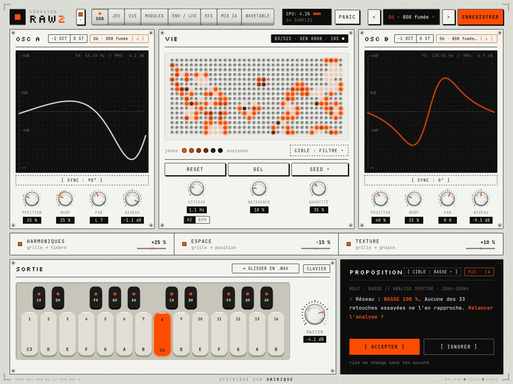
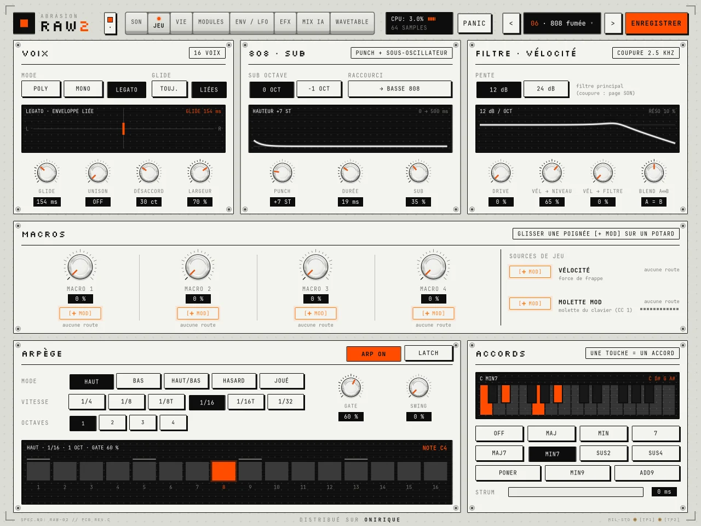
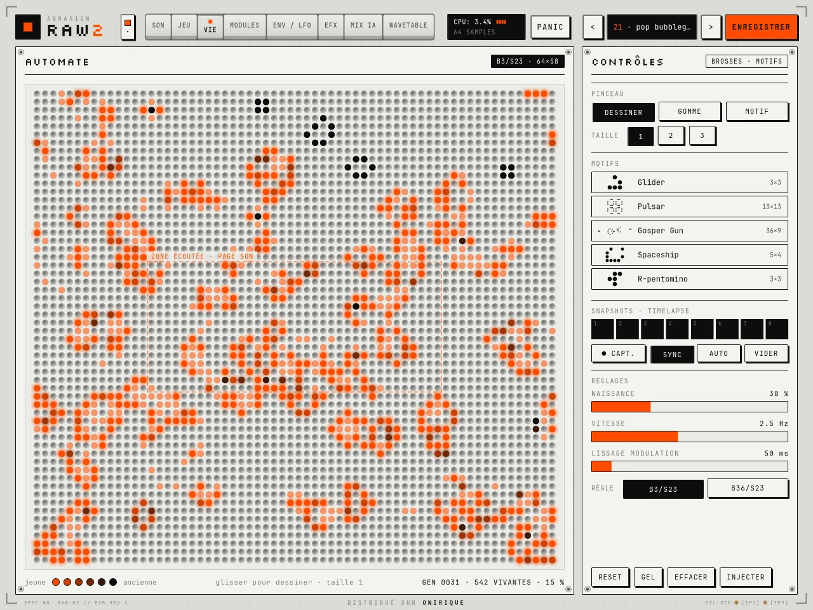
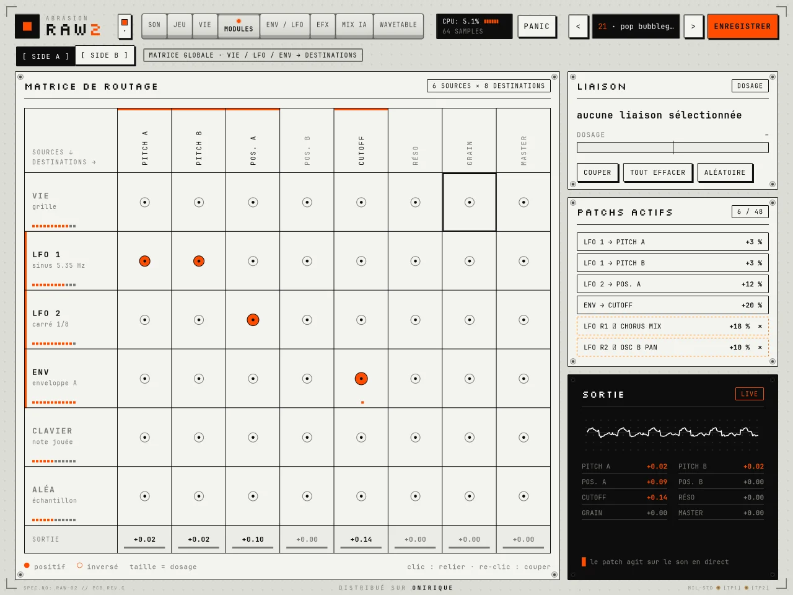
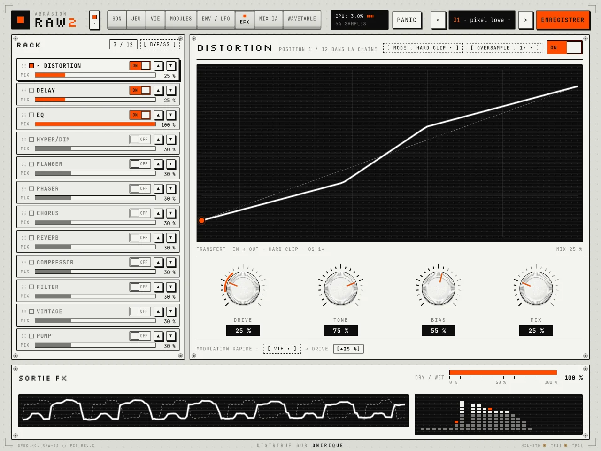
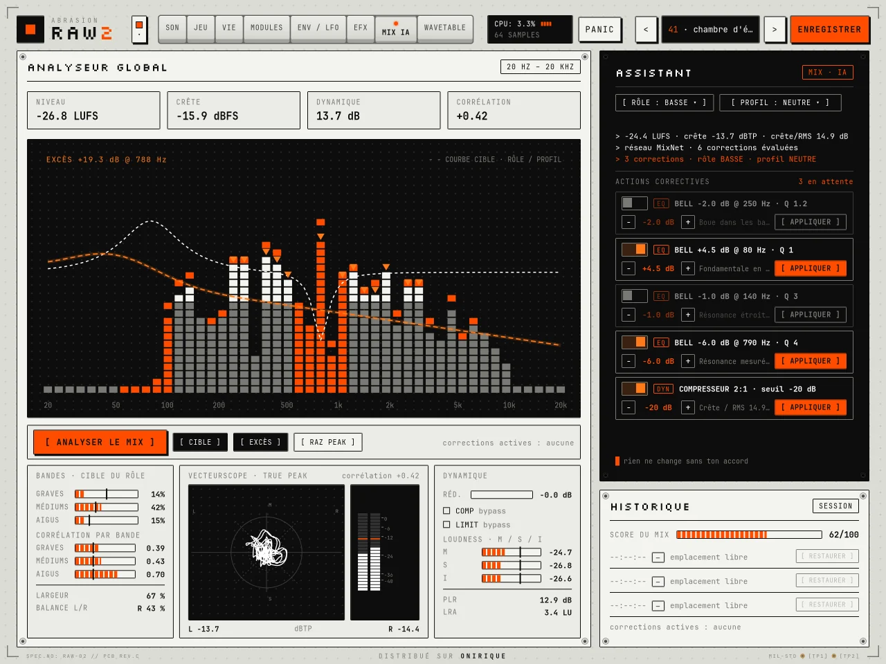
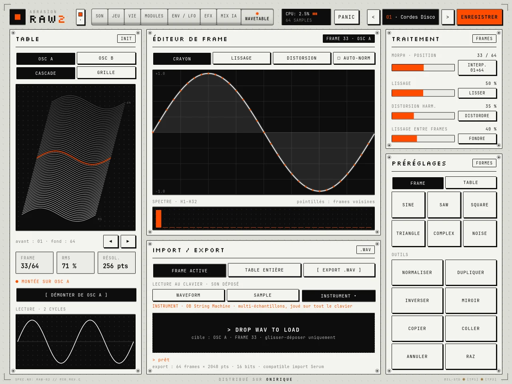

23 instruments réels
Basses, cuivres, claviers, cordes… multi-échantillonnés et joués sur tout le clavier, à la place de la table d’un oscillateur.
abrasion labs · synthé
La suite de RAW, en beaucoup plus grand. Deux oscillateurs wavetable, un automate cellulaire qui fait vivre le son, 23 instruments réels et un mix assisté par IA qui ne touche à rien sans ton accord.

Une page par métier. Choisis-en une pour voir l’écran et ce qu’il fait.






02 / essaie
Chaque cellule naît, vit ou meurt selon ses voisines. La tête de lecture balaie la grille et chaque groupe de cellules qu’elle croise devient une note.
Clique ou glisse dans la grille pour semer des cellules, comme avec le pinceau de la page VIE.
Basses, cuivres, claviers, cordes… multi-échantillonnés et joués sur tout le clavier, à la place de la table d’un oscillateur.
Le bouton → GLISSER EN .WAV exporte ton son d’un clic ou le dépose directement dans ton projet.
Legato, glide, punch et sub une octave dessous, réglés d’un coup pour une 808 qui tient.
Des presets rangés par style et catégorie, avec favoris et bouton hasard pour tomber sur une idée.
Une enveloppe par oscillateur et deux LFO, avec leurs nœuds à déplacer à la souris.
ALU, NOTHING, TITANE, CRT, ULTRAVIOLET et ONIRIQUE. Le clavier prend la couleur du thème.
Téléchargement immédiat, clé de licence par e-mail, licence pour toi sur trois appareils, mises à jour de la version 2 incluses.
Ce sont deux plugins distincts, tu peux garder les deux. RAW 2 reprend l’idée de RAW (oscillateurs wavetable et automate) et y ajoute les instruments, la matrice, les effets, le jeu et le mix assisté par IA.
Non. Elle analyse et propose. Chaque correction attend que tu l’acceptes, et l’historique permet de revenir en arrière.
Copie le fichier RAW 2.vst3 dans C:\Program Files\Common Files\VST3, puis relance la recherche de plugins dans ton logiciel.
Trois appareils à toi. Tu peux en libérer un depuis ton compte ou depuis le plugin pour en activer un autre.
Le droit de rétractation ne s’applique plus une fois le téléchargement commencé, avec ton accord exprès au moment de l’achat. Si le plugin ne fonctionne pas comme décrit, la garantie légale de conformité s’applique. Détails dans les conditions générales de vente.